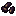
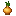
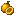
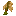
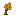
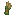
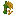
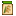

Lavouras
Da Vale das Araucárias Wiki
As 12 lavouras do Sul existem desde a versão 1.8.0 e ganharam sprites próprios na 1.8.1. Elas só adicionam conteúdo: arroz, milho e trigo originais não foram duplicados nem alterados.
Lavouras regionais do Rio Grande do Sul, de Santa Catarina e do Paraná. Cada uma copia a lógica de uma cultura parecida do jogo e foi ajustada para ficar na mesma faixa de lucro. Para a mecânica geral, veja Cultivo; para as datas, o Calendário.
Todas as lavouras
| Imagem | Lavoura | Estações | Cresce em | Rebrota | Colheita | Semente | Loja | Venda |
|---|---|---|---|---|---|---|---|---|
 | Feijão-preto | 9 d | — | Mão | 40g | Armazém do Pierre | 50g | |
| Mandioca | 14 d | — | Mão | 60g | Armazém do Pierre | 100g | ||
| Batata-doce | 9 d | — | Mão | 50g | Armazém do Pierre | 110g | ||
 | Cebola | Inverno | 10 d | — | Mão | 30g | Armazém do Pierre | 75g |
 | Maracujá | 11 d | 4 d | Mão | 70g | Armazém do Pierre | 60g | |
| Pimentão | 9 d | 4 d | Mão | 50g | Armazém do Pierre | 55g | ||
 | Aveia-branca | Inverno | 7 d | — | Foice | 10g | Armazém do Pierre | 30g |
 | Cevada | Inverno | 7 d | — | Foice | 10g | Armazém do Pierre | 30g |
 | Centeio | Inverno | 8 d | — | Foice | 10g | Armazém do Pierre | 30g |
| Soja | 10 d | — | Mão | 30g | Armazém do Pierre | 35g | ||
| Azevém | Inverno | 7 d | — | Foice | 20g | Rancho da Marnie | 10g | |
 | Arroz irrigado em casca | 9 d | — | Foice | 40g | Armazém do Pierre | 30g |
 Primavera
Primavera
| Semente | Colheita | Crescimento | Preço da semente | Venda | Descrição |
|---|---|---|---|---|---|
Sementes de feijão-preto | Feijão-preto | 9 dias | 40g | 50g | Grãos secos de feijão-preto. Precisam ser cozidos. O Paraná é o maior produtor de feijão do Brasil. |
Manivas de mandioca | Mandioca | 14 dias | 60g | 100g | Raiz rica em amido, também chamada de aipim. Coma só cozida ou frita. |
Ramas de batata-doce | Batata-doce | 9 dias | 50g | 110g | Raiz doce e nutritiva. O Rio Grande do Sul é o maior produtor de batata-doce do Brasil. |
Sementes de cebola | Cebola | 10 dias | 30g | 75g | Bulbo de sabor forte. Em Santa Catarina, as mudas vão para a lavoura no inverno. |
Sementes de arroz irrigado | Arroz irrigado em casca | 9 dias | 40g | 30g | Arroz ainda com casca, de lavoura irrigada. O Rio Grande do Sul produz a maior parte do arroz do Brasil. Leve ao moinho. |
 Verão
Verão
| Semente | Colheita | Crescimento | Preço da semente | Venda | Descrição |
|---|---|---|---|---|---|
Sementes de feijão-preto | Feijão-preto | 9 dias | 40g | 50g | Grãos secos de feijão-preto. Precisam ser cozidos. O Paraná é o maior produtor de feijão do Brasil. |
Manivas de mandioca | Mandioca | 14 dias | 60g | 100g | Raiz rica em amido, também chamada de aipim. Coma só cozida ou frita. |
Ramas de batata-doce | Batata-doce | 9 dias | 50g | 110g | Raiz doce e nutritiva. O Rio Grande do Sul é o maior produtor de batata-doce do Brasil. |
Sementes de maracujá | Maracujá | 11 dias rebrota a cada 4 | 70g | 60g | Fruto azedinho e perfumado. O Sul Catarinense concentra quase toda a produção de Santa Catarina. |
Sementes de pimentão | Pimentão | 9 dias rebrota a cada 4 | 50g | 55g | Fruto de casca firme, verde ou colorido conforme o ponto de colheita. |
Sementes de soja | Soja | 10 dias | 30g | 35g | Grãos de soja, de onde se extrai óleo. No Sul, é semeada do meio da primavera ao começo do verão. |
Sementes de arroz irrigado | Arroz irrigado em casca | 9 dias | 40g | 30g | Arroz ainda com casca, de lavoura irrigada. O Rio Grande do Sul produz a maior parte do arroz do Brasil. Leve ao moinho. |
 Outono
Outono
| Semente | Colheita | Crescimento | Preço da semente | Venda | Descrição |
|---|---|---|---|---|---|
Manivas de mandioca | Mandioca | 14 dias | 60g | 100g | Raiz rica em amido, também chamada de aipim. Coma só cozida ou frita. |
Sementes de maracujá | Maracujá | 11 dias rebrota a cada 4 | 70g | 60g | Fruto azedinho e perfumado. O Sul Catarinense concentra quase toda a produção de Santa Catarina. |
Sementes de pimentão | Pimentão | 9 dias rebrota a cada 4 | 50g | 55g | Fruto de casca firme, verde ou colorido conforme o ponto de colheita. |
 Sementes de aveia-branca | Aveia-branca | 7 dias | 10g | 30g | Grãos de aveia-branca, cereal de inverno muito cultivado no Rio Grande do Sul. Leve ao moinho. |
Sementes de cevada | Cevada | 7 dias | 10g | 30g | Grãos de cevada, cereal de inverno usado no malte da cerveja. Boa parte da cevada do Brasil vem do Paraná. |
Sementes de centeio | Centeio | 8 dias | 10g | 30g | Grãos de centeio, cereal de inverno resistente ao frio. No Sul, também serve de pasto. |
Sementes de soja | Soja | 10 dias | 30g | 35g | Grãos de soja, de onde se extrai óleo. No Sul, é semeada do meio da primavera ao começo do verão. |
Sementes de azevém | Azevém | 7 dias | 20g | 10g | Capim de inverno usado como pasto e forragem no Sul. Não é comida para gente. Leve ao moinho para virar feno. |
Inverno
| Semente | Colheita | Crescimento | Preço da semente | Venda | Descrição |
|---|---|---|---|---|---|
Sementes de cebola | Cebola | 10 dias | 30g | 75g | Bulbo de sabor forte. Em Santa Catarina, as mudas vão para a lavoura no inverno. |
Sementes de aveia-branca | Aveia-branca | 7 dias | 10g | 30g | Grãos de aveia-branca, cereal de inverno muito cultivado no Rio Grande do Sul. Leve ao moinho. |
Sementes de cevada | Cevada | 7 dias | 10g | 30g | Grãos de cevada, cereal de inverno usado no malte da cerveja. Boa parte da cevada do Brasil vem do Paraná. |
Sementes de centeio | Centeio | 8 dias | 10g | 30g | Grãos de centeio, cereal de inverno resistente ao frio. No Sul, também serve de pasto. |
Sementes de azevém | Azevém | 7 dias | 20g | 10g | Capim de inverno usado como pasto e forragem no Sul. Não é comida para gente. Leve ao moinho para virar feno. |
No inverno, só crescem espécies de clima frio: cebola, aveia-branca, cevada, centeio e azevém.
Processados e pratos
| Imagem | Item | Descrição | Venda | Comestível |
|---|---|---|---|---|
| Farinha de milho (fubá) | Milho moído fino. É a base da polenta, da broa e do bolo de fubá. | 75g | Não | |
| Aveia em flocos | Grãos de aveia amassados em flocos. Dá para comer assim mesmo. | 50g | 25 · 11 | |
| Broa de milho | Pão de fubá, denso e amarelinho. | 160g | 63 · 28 | |
| Bolo de fubá | Bolo fofo de fubá, bom para acompanhar um café. | 220g | 100 · 45 |